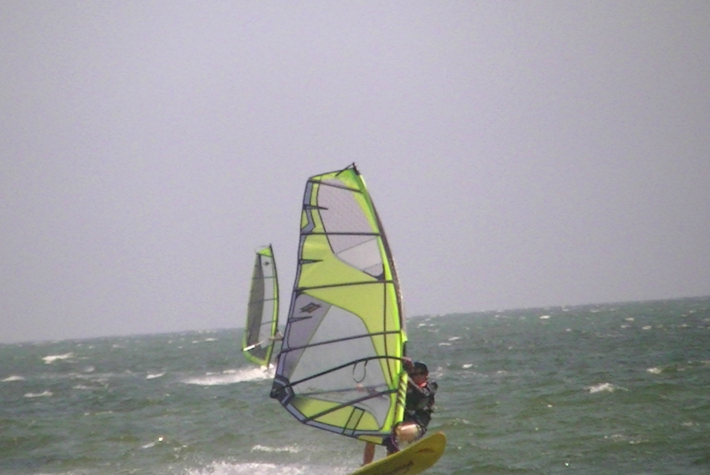
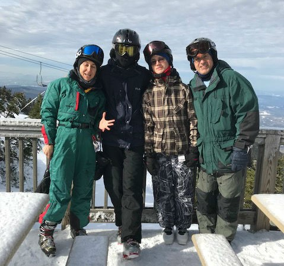
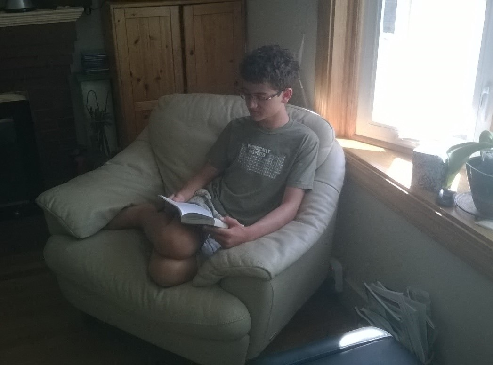

Windsurfing
I have been windsurfing since I was around 8. My whole family windsurfs on Cape Cod at West Dennis Beach during the summer, late spring, and early fall. We also occasionally travel to Bonaire in the Caribbean on windsurfing trips. Windsurfing is a fun and exciting sport which also teaches perseverance and independence.
Skiing
I also have been skiing since a young age. I normally ski in New Hampshire, but I also enjoy backcountry skiing in Vermont and Quebec. I am currently working on skiing in moguls.
Reading
I love to read all sorts of fantasy books in my free time. My favorite book is often the one I just finished, but some of my favorite authors include (in no particular order) Robin Hobb, Cinda Williams Chima, Ayn Rand, Patrick Rothfuss, Rafael Sabatini, George Orwell, Tessa Gratton, Maggie Stiefvater, Philip Pullman, Cornelia Funke, Angie Sage, Eoin Colfer, J. K. Rowling, Lois Lowry, J. R. R. Tolkien, Orson Scott Card, Erin Morgenstern, Gregory Maguire, and N. K. Jemisin.
In the picture I am reading The Scorpio Races by Maggie Stiefvater, which is a fantasy novel about horse races with mythical water horses that are fiercer and faster than regular horses, and how a girl enters the races one year to save her house.